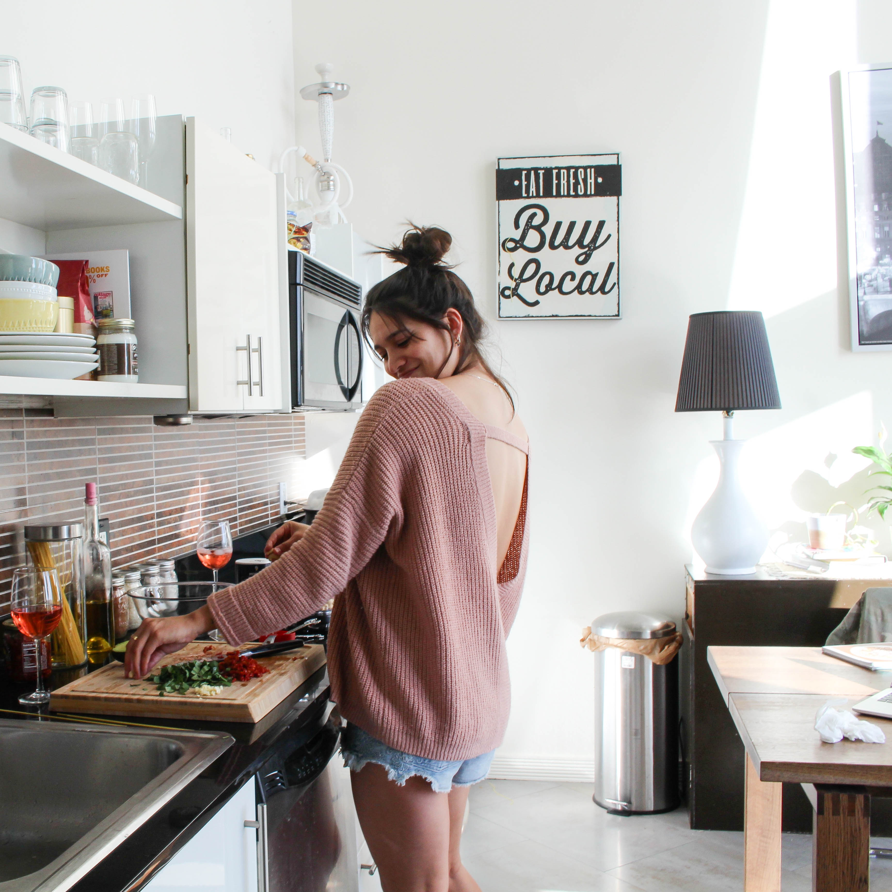

All photography by Olivia Becht
Original recipe from Julia's Album
Again, comfort food over everything! I know I know, how do I enjoy such spicy pastas when I live in Miami, FL where it's high temperatures all year around. BUT! If we're lucky, we get a few days of cooler temperatures. So, during one of those cooler nights I make my way to the grocery store and stock up on these exact ingredients paired with a white wine. There is something cozy about warm pasta with a little spice to it. I stumbled across this delicious recipe on Julia's Album. I'm vegetarian and this dish can easily be made without any chicken, that's why its my go to staple when my family is hungry for pasta! Did I mention everything is fresh and it makes it that much better. Time to carb load folks! Winter is here... For some of us... I hope you enjoy this recipe and check out Julia's Album for more delicious plates of goodness! 
1/4 cup sun-dried tomatoes chopped, drained of oil
2 tablespoons olive oil drained from sun-dried tomatoes
1/2 lb chicken bonless and skinless chopped (or not)
1/4 teaspoon salt
1/4 teaspoon red pepper flakes
4 roma tomatoes chopped
3 garlic cloves chopped
8 0z. spaghetti pasta
3 tablespoons olive oil (use high quality olive oil or oil from the sun-dried tomatoes jar)
1 tablespoon water
1 teaspoon maple syrup
Add chopped sun-dried tomatoes and 2 tablespoons of olive oil, drained from sun-dried tomatoes, to a large skillet, on medium low heat. Add chopped chicken (I used boneless skinless chicken thighs and prefer to use them, but you can use chopped chieken breast, as well), red pepper flakes, and salt over all of the ingredients in the skillet, and cook on medium heat until chicken is cooked through and no longer pink, about 5 minutes.
Cook pasta accodringly to package instructions, until al dente. Drain, and add cooked and drained pasta to the skillet with the chicken and vegetables. Reheat on low heat, mix everything well, add more seasonings (salt and pepper), if desired. Remove from heat.
When the pasta and vegetables are off heat, you can add more olive oil or reserved oil from the sun-dried tomatoes.